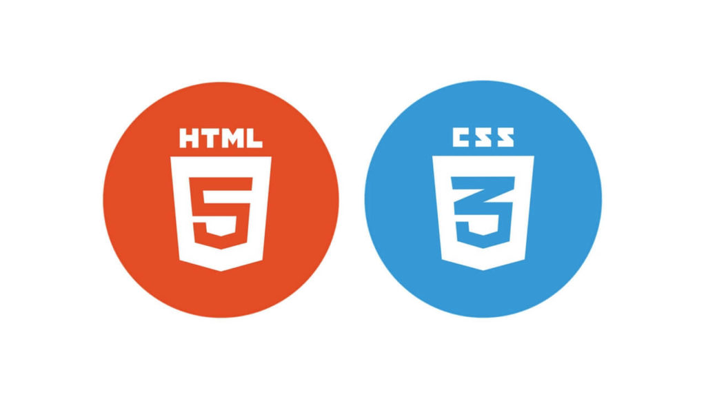

Lenguajes de Marca
Los lenguajes de marca son utilizados para describir el contenido y la estructura de los documentos de texto. A continuación, se describirán brevemente algunos de los lenguajes de marca más utilizados:
HTML
El lenguaje de marcado de hipertexto (HTML) se utiliza para crear documentos web y describe la estructura del contenido utilizando etiquetas. Las etiquetas HTML pueden usarse para crear encabezados, párrafos, enlaces, listas y tablas, entre otros elementos.

CSS
Las hojas de estilo en cascada (CSS) se utilizan para dar estilo a los documentos HTML. CSS permite definir cómo se presentará el contenido en la página, como el color, la fuente y el tamaño del texto, así como el diseño y la posición de los elementos en la página.
XML
El lenguaje de marcado extensible (XML) se utiliza para describir datos y estructuras de datos. XML es un lenguaje de marcas genérico que se utiliza en una variedad de aplicaciones, desde documentos de texto hasta intercambio de datos entre sistemas informáticos.